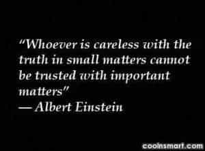

< < < Back
11 Ways To Avoid Being Blindsided At Work – Return Of Kings
It is difficult for men to survive the gyno-centric workplace environments of today’s societies, complete with fem-centric workplace laws. Plus, this problem gets compounded in offices where a mangina is at the helm, further shifting the power equation in female favor.
Patriarchal modern men have to increasingly choose from between either switching to male-dominated blue collar jobs or pursuing entrepreneurship, or adapt by gaming their workplace environments.
The defusing gameplan to a potential blindside
One TV show which accurately portrays the nature of a blindside is Survivor – a social game where castaways are left to survive on an island, and outwit, outplay, and outlast each other to win the million dollar prize for the sole survivor.
The contestants’ gameplay often exemplify laws from works like The 48 Laws Of Power, mirroring the manipulative and fickle nature of real life politicking, and the necessity of acquiring dark triad social game (with some nsfw examples) – traits which some of the past winners have actually embodied while playing.
But many “deserving” contestants had been voted out or blindsided on the show simply because they underestimated or lacked the social intelligence to read the superior manipulative game of their physically weaker competition (usually women), or blend “effectively” with their tribe.
The scenarios on the show often present fitting analogies to real life situations one may increasingly face, offering valuable info so as to know how to overcome manipulation and betrayal by others – both in private or professional life. Here are a few of the lessons:
1. Be dynamic
By taking a shape, by having a visible plan, you open yourself to attack. Instead of taking a form for your enemy to grasp, keep yourself adaptable and on the move. Accept the fact that nothing is certain and no law is fixed. The best way to protect yourself is to be as fluid and formless as water; never bet on stability or lasting order. Everything changes. – Law 48
In today’s office environments where unscrupulous power games often abound, being predictable and “rigid” would only present visible chinks in your personality which unethical workplace competitors will exploit.
Understand that your ethics could become exploited as a weakness by them, so try to emulate Odysseus‘s craftiness and dynamism instead when dealing with such competition.
2. Always put your interests first: don’t let comfort or pity deter you from your goal

Lots of men get blindsided professionally by their rivals because they let their personal humanity and chivalry, or the “comfort” of their office environment, distract them from their own personal interests. T
his not only results in professional failure, but also waste of precious time which can never be replaced. Thus, never lose focus of your goal through times of professional comfort or adversity, and crush your rivals totally when opportunity presents it.
3. Do your groundwork and document everything
Failure to do your “research” and document information on your workplace rivals will not only give them leeway, but also make your case weak when soliciting allies or support to crush them. So understand the utility and power of a damning piece of “evidence” which can be used against them.
4. Keep your eyes and ears open: don’t let blind trust and favoritism blind you to the reality around you

The blindsided man is usually the gullible one who gets too comfortable and overconfident, blindly trusts people, and fails to properly read the reality around him. This risk is greater in today’s multinational work environments, where it’s natural to be automatically drawn to some more than others based on common interests, similar ethnic and religious backgrounds, etc.
But don’t let these superficial commonalities eventually blind you to their true character. Instead, use Law 14 – Pose as a friend and work as a spy – to know the real nature of your office colleagues before choosing the right ones to form an office “tribe” with.
5. Make “strategic” but temporary alliances
“..isolation exposes you to more dangers than it protects you from-it cuts you off from valuable information, it makes you conspicuous and an easy target. Better to circulate among people, find allies, mingle.” – Law 18
Isolation is dangerous, and avoid becoming an “island” at work . This becomes important to avoid the radar of the professional higher-ups for the wrong reasons, and get the target off your back. So combine this with:
- Law 3 – Conceal your true intentions
- Law 4 – Always say less than necessary
- Law 38 – Think as you like but behave like others
But realize that “alliances” can be transitory – so don’t commit forever, unless to exceptionally trustworthy people.
6. Test your colleagues before you think of trusting them

To ascertain people’s trustworthiness, try testing them first with trivial bits of pseudo “confidential information ” to see whether they guard it or circulate it. Never invest trust in office gossip mongers, rabblerousers, or backbiters—for as they do to others, they can do likewise to you.
8. Master the art of timing
It’s not only important how to deal with your professional rivals, but also when to deal with them. The right move at the wrong time becomes the wrong move. So plan accordingly, and know when to attack or retreat.
9. Try to become “indispensable”
Average never got anyone anywhere – even more so at work. Indeed, being a performer will attract the envy of competitors, but try to achieve professional indispensability by keeping people dependent on you for your work expertise, and never teach others enough so that they can do without you.
Your “indispensability” could likely then ingratiate you to those in power possibly giving you (temporary) professional immunity, and buy you time to prepare for your own blindside on your rivals.
10. Always have a backup plan(s)
Just like how women cannot hurt men with sexual options, similarly companies cannot hurt men who have backup options in case of unexpected layoffs. Failing to plan is planning to fail – so plan all the way to the end, with preferably multiple backup plans.
11. Listen to your gut instinct

While it’s wise to plan ahead, it’s equally important not to disregard your gut instinct, which might warn you ahead of a potential plot against you at work. Your gut instinct may not be always right (since most usually disregard it for conventional thinking) – but relying on it frequently will gradually optimize it for future use.
At work, a little paranoia will not harm you, but rather keep you based in reality to avoid becoming slack, and not take things casually for granted – but this usually happens when men deal with women professionally, which needs to be addressed separately.
Conclusion

The ruthless and unscrupulous nature of modern social life makes it increasingly important for modern men to acquire Machiavellian game (or dark triad traits) to adapt to it.
Let not blind trust or comfort intoxicate men into peaceful apathy and becoming sitting ducks for blindsides, both in their personal and professional lives. Your trust is something to be earned; not to be dispensed randomly and blindly to others.
Read Next: Modern Men Are Becoming Lotus Eaters


{kind=link}
{kind=link}
{kind=link}
{kind=link}